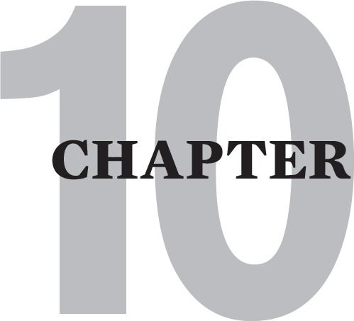

SHRINKING THE OUTER CRITIC
THE OUTER CRITIC: THE ENEMY OF RELATIONSHIP
In Cptsd, the critic can have two aspects: inner critic and outer critic. The inner critic is the part of your mind that views you as flawed and unworthy. The outer critic is the part that views everyone else as flawed and unworthy. When the outer critic is running your mind, people appear to be too awful and too dangerous to trust.
When she was stuck in an outer critic attack, one of my clients would often rant like this: “Everybody s*cks. People are so selfish and scary. They either f*ck you over or they let you down.” She eventually named this an “I’m-moving-to-another-planet flashback.”
The outer critic is the counterpart of the self-esteem-destroying inner critic. It uses the same programs of perfectionism and endangerment against others that your inner critic uses against yourself. Via its all-or-none programming, the outer critic rejects others because they are never perfect and cannot be guaranteed to be safe.
As with the inner critic, outer critic attacks are usually internal and silent, unless you are a fight type as we will see below.
When we regress into the outer critic, we obsess about the unworthiness [imperfection] and treacherousness [dangerousness] of others. Unconsciously, we do this to avoid emotional investment in relationships.
The outer critic developed in reaction to parents who were too dangerous to trust. The outer critic helped us to be hyperaware of the subtlest signal that our parents were deteriorating into their most dangerous behaviors. Over time the outer critic grew to believe that anyone and everyone would inevitably turn out to be as untrustworthy as our parents.
Now, in situations where we no longer need it, the outer critic alienates us from others. It attacks others and scares them away, or it builds fortresses of isolation whose walls are laundry lists of their exaggerated shortcomings. In an awful irony, the critic attempts to protect us from abandonment by scaring us further into it.
If we are ever to discover the comfort of soothing connection with others, the critic’s dictatorship of the mind must be broken. The outer critic’s arsenal of intimacy-spoiling dynamics must be consciously identified and gradually deactivated.
4F TYPES AND OUTER CRITIC/INNER CRITIC RATIOS
Depending on your 4F type, you may gravitate to either the inner or the outer critic. Different 4F types generally have different ratios of outer and inner critic dynamics, and some polarize extremely to one or the other.
Freeze and Fight types are often polarized to the outer critic. Fawn types tend to be dominated by the inner critic. Flight types can have the most variance in inner and outer critic ratio. Your subtype can also have a big influence on this.
The Freeze type can judgmentally denounce the entire outside world to justify her all-or-none belief that people are dangerous. The Flight type can use his own perfectionistic striving to excel so that his outer critic can judge everyone else as inferior. The Fawn type uses inner critic self-hate to self-censor and avoid the fear of being authentic and vulnerable in relationship. The Fight type, in a paradoxical twist, controls others through the outer critic to prevent them from abandoning him while at the same time using prickliness to not let them get too close.
Fight types can also leave at the first sign that the other cannot be controlled. One flight-fight type, who I worked with briefly, told me with great upset about a recent betrayal. His new partner “insisted” on replacing the empty toilet paper roll so that the new roll unwound from the bottom instead of the top. He asked her once to do it his way and felt so betrayed when she did not comply, that he broke up with her. I could not help feeling that she was fortunate that she got away.
Unfortunately, this client was not able to take in that the lion’s share of his upset was a flashback. He had flashed back to his rigidly controlling mother frightening him into believing that the toilet paper must unwind from the top. She had punished him into believing that this was a universal truth. Perfectionism, in the hands of the outer critic, can be paranoiacally picayune.
Finally it is not unusual for survivors, who have significantly shrunk their dominant critic mode, to experience a reciprocal increase in the virulence of its opposite counterpart. This came as a disappointing shock to me at a time when I was congratulating myself that my inner critic was a mere shadow of its former self. Soon thereafter, I noticed that I was plagued by a new judgmentalness that seemed out of character. Curiosity and a growing mindfulness about this development lead me to a lot of the insights that I share in this chapter. With enough mindfulness, this shift in critic mode can then become an opportunity to further shrink the overall combined agency of the outer and inner critic.
PASSSIVE-AGGRESSIVENESS AND THE OUTER CRITIC
Children are initially wired to respond angrily to parental abuse or neglect. Outside of the fight types, most traumatized children learn early that protesting parental unfairness is an unpardonable offense. They are generally forced to repress their protests and complaints. This then renders their anger silent and subliminal. This anger however, does not disappear. It percolates as an ever accumulating sea of resentment that can fuel the outer critic’s obsession for finding fault and seeing danger in everyone.
Viewing all relationships through the lens of parental abandonment, the outer critic never lets down its guard. It continuously transfers unexpressed childhood anger onto others, and silently scapegoats them by blowing current disappointments out of proportion. Citing insignificant transgressions as justification, the survivor flashes back into outer critic mode, and silently fumes and grumbles in long judgmental ruminations. To bastardize Elizabeth Barrett Browning: “How do I find thee lacking? Let me count the ways.”
When silently blaming the wrong person becomes habitual, it manifests as passive-aggressiveness. Common examples of passive aggression are distancing yourself in hurt withdrawal, or pushing others away with backhanded compliments. Other examples include poor listening, hurtful teasing disguised as joking, and the withholding of positive feedback and appreciation. Chronic lateness and poor follow through on commitments can also be unconscious, passive-aggressive ways of expressing anger to others.
Refusing To Give Voice To The Critic’s Point Of View
The outer critic is the author of this intimacy-spoiling program: Being honest to a fault. In the guise of honesty, the outer critic can negatively notice only what is imperfect in another. Under the spell of perfectionism, the outer critic can tear the other apart by laundry-listing his normal weaknesses and foibles. When challenged about this many fight types will respond that: “I was just trying to be honest!”
The inner critic has its own version of excessive honesty which I sometimes call “beating you to the punch.” Afraid of being criticized [as in childhood], the inner critic can launch the survivor into a “confession” of her every defect in hopes of short-circuiting anyone else from bringing them up. Sometimes hearing the criticism from yourself feels less hurtful than hearing it from someone else. After all, it’s old news to you and your critic.
I subscribe to authenticity as one of my highest values, but it does not include sharing my outer critic’s view of you or exposing my inner critic’s unfair judgments of me.
As stated earlier, the toxic critic is not an authentic part of us. We were not born with it. We were indoctrinated with it by parents who viewed us in an extremely negative and jaundiced way. Because of this, we need to protect our intimates from its distorted and destructive judgments. Just as importantly, we need to protect ourselves from alienating people by presenting ourselves as if we are so defective that we do not deserve to be loved.
OUTER CRITIC-DOMINATED FLASHBACKS
Holly, an elderly client and a flight-fight type, was suffering minor, age-related memory loss. She started her session chuckling: “I was reading your article on the Outer Critic again last night. I didn’t really get it when I read it three years ago, but I get it now and I think it’s because my memory deterioration has a silver lining.
“So, you know how I’m always blaming my husband whenever anything goes wrong at home. Well I’m starting to get that it’s an all-or-none, outer critic process that I get stuck in.
“I’ve been blaming him for misplacing or not putting things away for decades but I’ve started to notice that it’s me who often misplaces things. I was cooking a meal last night and looking for the food scissors that I use to cut up leafy vegetables. It wasn’t on the magnetic wall strip where I insist that we keep it, and I immediately started feeling very angry at him - and more and more angry as I searched in various drawers to no avail.
“The longer I searched, the more exasperated I got, and sure enough, I found myself laundry-listing all his faults. My resentment rapidly escalated and peaked with me deciding that I really was going to leave him this time. As I continued to amass evidence that he was a terrible loser and that this was a wise decision, I went back to the stove and found the scissors where I’d left them five minutes ago. I could see the scraps of spinach still on them from when I’d cut it up over the pot!
“What a mortifying epiphany I had! - Especially since a similar thing had happened with the tooth paste the night before. I forgot I had put it in the medicine cabinet in one of my organizational upgrades, and I was convinced Frank had moved it from its proper place. I started reading him the riot act so intensely, that he pretended he had to get something out of the car. And then, when I went to the medicine cabinet for some aspirin, there it was where I had placed it myself!
“Oh my god, that outer critic did an instant about face into becoming the inner critic. And then when it had contemptuously lambasted me to tears, I suddenly had another epiphany about how I would let any mistake on his part launch me into a two volume history of his past mistakes. I’d get so stuck in that negative noticing that I couldn’t call to mind a single good thing about this good enough husband that I’ve had for thirty-five years.”
Holly and I spent a great deal of time fleshing this out. She could see that the outer critic typically triggered her into a very old feeling and belief that “People are so unreliable – they always let you down –they just can’t be trusted!”
We then moved into exploring her childhood, looking for clues as to where this belief that people were so untrustworthy began. She closed her eyes, took a few deep breaths, and when she opened them tears trickled down her face. “It was Father – Daddy - that incredibly selfish, alcoholic a-hole. Please pardon my French. No matter where I’d hide my baby-sitting money he’d always find it, and come home drunk later, crying about how sorry he was and how he’d never do it again. He’d even let me go off on him! Oh my God, just like poor Frank! Just sit there and take it. Only poor Frank [more tears], he’s never done anything like that to me. He’s pretty reliable in most ways, except for not being as organized as me.”
OUTER CRITIC MODELLING IN THE MEDIA
Outer critic entrenchment is also difficult to dislodge because its parlance is normalized, and worse, celebrated in our society. Skewering people seems to be standard practice in most TV comedies. Moreover, many influential, seemingly healthy adults model a communication style that is rife with judgmentalness, sarcasm, negativity, fear-mongering and scapegoating.
Giving control of our social interactions to the outer critic prohibits the cultivation of the vulnerable communication that makes intimacy possible. We must renounce unconscious outer critic strategies such as: [1] “I will use angry criticism to make you afraid of me, so I can be safe from you”; [2] “Why should I bother with people when everyone is so selfish and corrupt” [all-or-none thinking]; [3] “I will perfectionistically micromanage you to prevent you from betraying or abandoning me”; [4] “I will rant and rave or leave at the first sign of a lonely feeling, because ‘if you really loved me, I would never feel lonely’”.
The Critic: Subliminal B-Grade Movie Producer
The outer critic typically arises most powerfully during emotional flashbacks. At such times, it transmutes unconscious abandonment pain into an overwhelmingly negative perception of people and of life in general. It obsessively fantasizes, consciously and unconsciously, about how people have or could hurt us.
Over the years these fantasies typically expand from scary snapshots into film clips and even movies. Without realizing it, we can amass a video collection of real and imagined betrayals that destroy our capacity to be nurtured by human contact.
“Don’t trust anyone”, “Proud to be a loner”, “You can only depend on yourself”, “Lovers always leave you”, “Kids will break your heart”, “Only fools let on what they really think”, “Give them an inch and they’ll take a mile”, are titles of video themes survivors may develop in their quest for interpersonal safety.
These defensive and often subliminal daydreams are analogs of the critic-spawned nightmares that also shore up the “safety” work of frightening us into isolation. Over time, with enough recovery, intrusive anti-intimacy reveries become clues that we are actually in a flashback, and that we need to invoke our flashback management skills.
The dynamics of the outer critic are often obscured by minimization and denial. Its obsessions and “daymares” often occur just below the level of our awareness. They become subliminal via their repetitiveness like the sound of waves at the beach - like the sounds of traffic in the city - like the sound of the critic repetitively calling you or someone else a jerk, a loser, a dumbsh*t!
Watching The News As A Trigger
Sometimes the outer critic’s penchant for raising false alarms ensnares us with an insatiable hunger for listening to the news. When we do not resist this junk food feeding of our psyches with a news “service” that exults so thoroughly in the negative, we can be left floundering in a dreadful hypervigilance.
The critic can then work overtime to amass irrefutable proof that the world is unforgivably dangerous. Isolation, and minimal or superficial relating, is therefore, our only recourse. At such times any inclination to call a friend triggers images of rejection and humiliation before the phone can even be picked up. When flashbacks are particularly intense, impulses to venture out may immediately trigger fantasies of being verbally harassed or even mugged on the street.
In worse case scenarios, outer critic drasticizing deteriorates into paranoia. At its worst paranoia deteriorates into fantasies and delusions of persecution. I remember one horribly, humiliating experience that occurred in my early twenties on an occasion when I was very sleep-deprived. I was sitting on a park bench struggling to concentrate on the book I was reading. I had read the same short paragraph four times and barely registered a word of it. At the same time, I was becoming more and more aware of a group of people who had sat down behind me. I started feeling ashamed because they were having a great time while I sat there painfully self-conscious and despondent.
Suddenly I realized they were talking disparagingly about me. I was too scared to turn around. Their comments became steadily more insulting. Their loud laughter became increasingly mocking. In my mind’s I eye I could see them all staring and pointing at me: “Look at that sorry-ass loser. He’s pretending he’s not even listening!” Finally, in desperation, I turned around and croaked out a weak “What’s going on?”
I was shocked and even more mortified at the same time. They were not even looking at me. They were so immersed in their joyful banter that they did not even notice that I turned around and spoke. It became immediately obvious to me that it was a terrible figment of my imagination. I slunk away in shame and had to wait decades to understand how my Cptsd and the outer critic had manufactured this terrible paranoia.
INTIMACY AND THE OUTER CRITIC
As stated earlier, Cptsd typically includes an attachment disorder that comes from the absence of a sympathetic caregiver in childhood. When the developing child lacks a supportive parental refuge, she never learns that other people can soothe loneliness and emotional pain. She never learns that real intimacy grows out of sharing all of her experience.
To the degree that our caretakers attack or abandon us for showing vulnerability, to that degree do we later avoid the authentic self-expression that is fundamental to intimacy. The outer critic forms to remind us that everyone else is surely as dangerous as our original caretakers. Subliminal memories of being scorned for seeking our parents’ support then short-circuit our inclinations to share our troubles and ask for help.
Even worse, retaliation fantasies can plague us for hours and days on the occasions when we do show our vulnerabilities. I once experienced this after being very honest and vulnerable in a job interview with a committee of eight. Over the next three insomnia-plagued nights, my outer critic ran non-stop films featuring my interviewers’ contempt about everything I had said, and disgust about all that I had left out. Even after they subsequently and enthusiastically hired me, the outer critic plagued me with “imposter syndrome” fantasies of eventually being exposed as incompetent in the new job.
The No-Win Situation
While scaring us out of trusting others, the outer critic also pushes us to over-control them to make them safer. Over-controlling behaviors include shaming, excessive criticism, monologing [conversational control] and overall bossiness. An extreme example of the latter is the no-win situation, which is also known as the double bind. It is described in the vernacular as “damned if you do, and damned if you don’t.”[Only the most severe fight types do this consciously. These types are found on the end of the narcissistic continuum where narcissism turns into sociopathy.]
Sterling was a fight type client of mine who was strongly narcissistic, but not sociopathic. He wanted me to prove that I was meticulously attending to his pause-less monologue by giving him an empathic “un hunh” at about the rate of once a paragraph. He would usually cue me to do this by ending a sentence with “You Know?”
Over time, I could usually tell when he was in a flashback because he would be bothered by the frequency or quality of my “un hunh.” He was alternately frustrated if I used too many or too few “un hunhs”. In the first instance he fumed: “Haven’t you ever heard of a rhetorical question?” In the alternate instance, his frustration flared out at my lack of sympathy because I was not responding with “un hunh” enough.
There is an inner critic version of the no-win situation. Howard came into a session with a 102 temperature and a raging case of the flu. He told me: “I was lying in bed fluctuating between the sweats and the chills, and the critic was kicking my ass. ‘You lazy, flakey piece of sh*t! Stop feeling sorry for yourself. Get off your sorry ass and get to your appointment!’”
Howard then told me that he fought this for about fifteen minutes, but the critic finally won and he came. As he sat in my waiting room, the critic started in again: “You are such an idiot. How could you be so stupid to go out feeling like this? You masochistic loser, you’re just trying to kill yourself. Why do you even bother trying to get better?”
Scaring Others Away
To avoid the vulnerability of being close, the outer critic can also broadcast from the various inner critic endangerment program. Catastrophizing out loud can be very triggering to others and can be an unconscious way of making them afraid of us.
One of my basketball-playing acquaintances is addicted to listening to a local, doom-and-gloom news station. He has managed to alienate everyone in our gym by his non-stop proselytizing about the catastrophic demise of our times. One of the players joked that he will not pass him the ball anymore because he thinks the guy believes that it is impossible for it to go through the hoop.
Survivors who unnecessarily frighten others by excessively broadcasting about all the possible things that could go wrong rarely endear themselves to others. Moreover, they “force” others to avoid and abandon them when their negative noticing reaches a critical mass and becomes noise pollution.
VACILLATING BETWEEN OUTER AND INNER CRITIC
Many Cptsd survivors flounder in caustic judgmentalness, shuffling back and forth between pathologizing others [the toxic blame of the outer critic] and pathologizing themselves [the toxic shame of the inner critic]. They get stuck in endless loops of detailing the relational inadequacies of others, and then of themselves.
My parents’ twisted version of this boiled down to: “As f*cked up as we are, we’re still way better than you”. Karen Horney described this trauma two-step as all-or-none lurching between the polarities of the grandiose self and the despised self.
When we become lost in this process, we miss out on our crucial emotional need to experience a sense of belonging. We live in permanent estrangement oscillating between the extremes of too good for others or too unlikeable to be included. This is the excruciating social perfectionism of the Janus-faced critic: others are too flawed to love and we are too defective to be lovable.
A verbal diagram of a typical critic-looping scenario looks like this. The outer critic’s judgmentalness is activated by the need to escape the “in-danger” feeling that is triggered by socializing. Even the thought of relating can set off our disapproval programs so that we feel justified in isolating. Extended withdrawal however, reawakens our relational hunger and our impulses to connect. This simultaneously reverses the critic from outer to inner mode. The critic then laundry lists our inadequacies, convincing us that we are too odious to others to socialize. This then generates self-pitying persecution fantasies, which eventually re-invites the outer critic to build a case about how awful people are…ad infinitum…ad nauseam. This looping then keeps us “safe” in the hiding of silent disengagement.
When it emanates from the inner critic direction, the vacillating critic can look like this. The survivor’s negative self-noticing drives her to strive to be perfect. She works so hard and incessantly at it that she begins to resent others who do not. Once the resentment accumulates enough, a minor faux pas in another triggers her to shift into extreme outer critic disappointment and frustration. She then silently perseverates and laundry lists “people” for all their faults and betrayals. How long she remains polarized to the outer critic usually depends on her 4F type, but sooner or later she starts to feel guilty about this, and suddenly the inner critic is back on line judging her harshly for being so judgmental. The cataloguing of her own defects then resumes in earnest.
A Case Example Of The Vacillating Critic
My wife and I have been living together for more than a decade. We have come a long way in negotiating what seems to both of us - most of the time – a fair and flexible approach to handling the innumerable tasks involved in running a household with a young child. But sometimes, when I am experiencing an extended flashback, I start over-noticing imperfections in the general household order.
Where the critic first points the finger varies. If I am triggered into tired survival mode, the inner critic can launch into berating me for my sub-standard contribution. If on the other hand I am triggered into flight mode and have been speed-cleaning, my outer critic can start keeping score. In this latter mode, my outer critic can perseverate about how little my wife is doing compared to me. The comparisons are typically in the areas where I have recently been over-contributing.
But my fawn side is pretty strong and before too long, I can start noticing all the venues where I do not contribute as much as she. And suddenly I am the selfish slacker of the family. As the flashback continues, I may then flip into berating myself for being picky and ungenerous.
In an especially strong flash back, the outer critic will come back sooner or later and start assigning more weight and importance to my contributions, and then belittle her for being, slack, thoughtless, self-involved, etc.
In our early relationship I could loop this loop for quite some time, losing hours even days to feeling disaffected from my wife, and from myself. My peace of mind would deteriorate into an inner battleground of feeling abandoned by her while simultaneously judging myself for abandoning her. In the worst flashbacks, the process did not stay internal, and we would have conflicts about this issue.
These days conflict rarely occurs over chores. Because of what I have learned about the outer critic, internal looping about this has also decreased immeasurably. Mindfulness about my outer and inner critic processes allows me to identify them sooner and rescue myself and my relationship from them much more quickly.
The scenario above is also a typical example of what worrying looks like in a flashback.
THE CRITIC AS JUDGE, JURY AND EXECUTIONER
As noted above, not all survivors hide their outer critic. Fight types and subtypes can take the passive out of passive-aggressive and become quite aggressive. The survivor who is polarized to the outer critic often develops a specious belief that his subjectively derived standards of correctness are objective truth. When triggered, he can use the critic’s combined detective-lawyer-judge function to prosecute the other for betrayal with little or no evidence. Imagined slights, insignificant peccadilloes, misread facial expressions, and inaccurate “psychic” perceptions can be used to put relationships on trial. In the proceedings, the outer critic typically refuses to admit positive evidence. Extenuating circumstances will not be considered in this kangaroo court. Moreover any relational disappointment can render a guilty verdict that sentences the relationship to capital punishment. This is also the process by which jealousy can become toxic and run riot.
On another level, the outer critic is skilled at building a case to justify occupying a higher moral ground. From this lofty position, the critic then claims the right to micromanage others. Typically this is rationalized as being for the other’s own good. This control, however, is usually wielded on an unconscious level to protect the survivor from any reenactment of early parental abuse or neglect.
Micromanagement of others also devolves into a host of controlling behaviors. Fight types treat others like captive audiences, give them unsolicited performance evaluations, make unreasonable demands for improvement, and control their time schedules, social calendars and food and clothing choices. In worse case scenarios, they dramatically act out their jealousy, often without cause. At its absolute worst, outer critic relating looks like taking prisoners, not making friends.
Scapegoating
Scapegoating is an outer critic process whereby personal frustration is unfairly dumped onto others. Scapegoating is typically fuelled by unworked through anger about childhood abandonment. Displacing anger on the wrong target however, fails to release or resolve old or unrelated hurts.
Scapegoating is often a reenactment of a parent’s abusive role. It is blind imitation of a parent who habitually released his frustration by indiscriminately raging. When a fight type parent scapegoats those around him, he enforces a perverse kind of mirroring. He is making sure that when he feels bad, so does everyone else. It is like a bumper sticker I saw the other day: “If Momma ain’t happy, Nobody’s happy.”
I witnessed this common example of scapegoating several times in my childhood. My parents hated anyone who was late. If one of us children were even a minute late for something, they felt absolutely justified in blasting us with their “righteous” indignation. This was true even though we all learned very quickly to be anally punctual. Because of their untreated Cptsd however, their anger was the tip of the iceberg of their unexpressed rage about their own childhood hurts. In this case, they were flashing back to the pain of their parents’ chronic lateness and failure to show up to meet their normal childhood needs.
MINDFULNESS AND SHRINKING THE OUTER CRITIC
Reducing outer critic reactivity requires a great deal of mindfulness. This is as essential for fight types who act out aggressively, as it is for those trauma types who internally rant against the entire human group known as “F*cking People!”. It is also of great importance for any survivor who is locked into alienation because of the judgmentalness of his outer critic.
Mindfulness, once again, is the process of becoming intricately aware of everything that is going on inside us, especially thoughts, images, feelings and sensations. In terms of outer critic work, it is essential that we become more mindful of both the cognitive and emotional content of our thoughts.
This is the same as in inner critic work, where the two key fronts of critic shrinking are cognitive and emotional. Cognitive work in both cases involves the demolition and rebuilding processes of thought-stopping and thought substitution, respectively. And, emotional work in both instances is grief work. It is removing the critic’s fuel supply - the unexpressed childhood anger and the uncried tears of a lifetime of abandonment.
When Mindfulness Appears To Intensify The Critic
In early recovery the outer critic unfortunately seems to become nastier and stronger the more we challenge it. We may even think we are counter-productively stirring it up or making it worse by daring to resist it.
When mindfulness of the critic seems to strengthen it, we are typically flashing back to how our parents rebuked our early protests at their attacks. This is often impossible to remember because our dysfunctional parents typically kill our protest function before our memory function comes on line. Nonetheless, fear of parental reprisal is often the unconscious dynamic that scares us out of challenging our own toxic thinking. This is why survivors in early recovery often need to invoke the instinct of angry self-protection to empower their thought-stopping.
There is another dynamic occurring when critic-work seems to strengthen rather than weaken the critic. As we become less dissociated, we begin to notice critic processes that were there all along under the horizon of our awareness. Our childhood survival was aided by learning to dissociate from these painful critic processes. Consequently, many of us come into recovery barely able to even notice the critic.
Our recovering depends on us using mindfulness to decrease our habits of dissociation. Only then can we see the critic programs that we need to deconstruct, shrink and consciously disidentify from. This typically involves learning to tolerate the pain that comes from discovering how pervasive and strong the critic is. This pain is sometimes a hard pill to swallow because progress in fighting the critic is hard to see at first. And then, even when our shrinking work is effective, progress usually feels disappointingly slow and gradual. This is especially true during a flashback, when the critic can seem to be as strong as ever.
As stated earlier, the critic grew carcinogenically in childhood. It is like a pervasive cancer that requires many uncomfortable operations to remove. Nonetheless, we can choose to face the acute pain of critic-shrinking work because we want to end the chronic pain of having the critic destroy our enjoyment of life. It is the fight of a lifetime.
Thought Substitution And Correction: Supplanting the Critic
Many of us are still developmentally arrested in our need to orient our psyches towards noticing what is good, trustworthy and loveable about others and life in general. In working to shrink the outer critic, thought substitution is the practice of invoking positive thoughts and images of others to help erode the critic’s intimacy-spoiling habit of picking them apart.
One helpful thought substitution exercise is to list five recollections of positive interactions with a given friend, as well as five of her attributes. This same technique works well when we self-apply it to help us separate from our inner critic’s negative self-image. Toolbox 5, in chapter 16, contains a written exercise to broaden your appreciation of select others who have benefitted you.
Since thoughts typically give rise to speech, I also recommend that you practice the “5 positives to 1 negative” guideline when giving feedback to a loved one. John Gottman’s research has shown that this ratio is characteristic of how intimacy-successful couples communicate. This is also key because the outer critic was spawned in childhood by parental modeling that at least reversed this ratio.
GRIEVING SHORTCIRCUITS THE OUTER CRITIC
The role of grieving in shrinking the outer critic is as crucial as it is with the inner critic. As with the inner critic, angering at the outer critic helps to silence it, and crying helps to evaporate it.
We can use the anger of our grief to energize our thought corrections. This helps us to challenge the critic’s entrenched all-or-none perspective that everyone is as dangerous as our parents. Moreover, when our grieving opens into crying, it can release the fear that the outer critic uses to frighten us out of opening to others. Tears can also help us realize that our loneliness is now causing us much unnecessary pain. This in turn can motivate us to open to the possibility of finding safe connections.
Defueling The Outer Critic Via Working The Transference
Transference [AKA projection; AKA displacement] occurs when unprocessed feelings from the past amplify present time feelings. A key characteristic of outer critic-dominated flashbacks is that we displace emotional pain from past relationships onto current ones. Transference is the pipeline from the past that supplies the critic with anger to control, attack or disapprove of present relationships.
As a baby thrives on love, so does the outer critic thrive on anger. Like a parasite, the outer critic gorges on repressed anger, and then erroneously assigns it to present-day disappointments.
The most common transferrential dynamic that I witness occurs when leftover hurt about a parent gets displaced onto someone we perceive as hurting us in the present. When this occurs, we respond to them with a magnified anger or anguish that is out of proportion to what they did.
Transference can also grossly distort our perceptions, and sometimes we can misperceive a harmless person as being hurtful. Transference can fire up the critic to imagine slights that do not actually occur. Transference typically runs wild when the outer critic is on a rampage.
Just as the inner critic transmutes unreleased anger into self-hate, the outer critic uses it to control and /or push others away. Unexpressed and unworked through anger about childhood hurt is a hidden reserve that the critic can always tap into. The anger work of grieving the losses of childhood is so essential because it breaks the critic’s supply line to this anger.
Grieving out old unexpressed pain about our poor parenting gradually deconstructs the process of transferring it unfairly onto others. This is crucial because love and intimacy are murdered when the critic habitually projects old anger out at an intimate.
Healthy Outer Critic Venting
There are times when venting from the outer critic perspective is healthy, self-protective behavior. Sometimes the outer critic’s judgments are accurate. Sometimes people are acting as abusively as our parents did in childhood. In this vein, there are two healthy applications of outer critic aggressiveness. One is to protect ourselves when someone is actually attacking us. The other is in the work of grieving the losses of childhood. As we shall see in the next chapter, survivors benefit immeasurably from angrily judging their parents’ atrocious abuse and negligence.
Road Rage, Transference And The Outer Critic
Let us take another look at how the outer critic displaces anger from the past onto present-day relationships.
My client Johnny came in for his session boiling with road rage. Something infuriating had just occurred on his drive to my office. Before his butt hit the couch, he launched away: “That pompous SOB! People are so obnoxious. Everyone drives like they are the only ones on the road. What a jerk. Driving like he owns the whole road. Not giving a sh*t about anybody but himself. Nobody cares about anybody but themselves. Oh god! Don’t let me get started on my wife. I don’t know why I get out of bed in the morning. This jerk must have forgotten what turn signals are for. I felt like crashing right into that stuck-up bastard and his shiny new Beamer!”
Johnny radiated anger a full 360 degrees. He hated the driver who had cut him off, all the other drivers on the road, his wife, his employees, his neighbors, the government, and last - but thankfully least - his “overcharging therapist” who was always pretending to be “soooo empathetic.”
Johnny was a fawn-fight type. Usually he was mostly fawn. In our two years of working together, I had never seen him so enraged, and I was quite taken aback. I was indeed straining to hold an empathic position, but I knew he was in a flashback.
I encouraged him to further ventilate by hitting a tennis racket on a cushion. [This is a classic anger-release work technique for externalizing anger in a non-harmful way]. Johnny beat it like his life depended on it.
When his catharting petered out, I asked him to close his eyes. I then suggested that he ask himself if his feelings of outrage had a trail into the past. After a moment he said: “I’m so mad. I don’t want to do anything that you say right now. And it’s weird because I know you’re fishing for my father, but I keep thinking of my mother. She was such a wimp! She’d never drive like that asshole in the Beamer, and she didn’t rant and rave at me like he did, but you know I just feel so pissed at her for putting up with him for all those years, and never once standing up for me or protecting me. It’s bad enough I got him for father, but it’s even more unfair that I got her too”.
Johnny did another round of venting with the tennis racket: “I thought mothers were programmed to stick up for their kids! You know, like that mother bear sh*t. It’s so unfair…it’s so un-f*cken-believably unfair. I’d just like to shake her out of that numb trance she’d go into. Just shake some freaking sense into her!”
And then the tears came. Shortly after they subsided, the epiphany arrived. It made him laugh. Genuinely. It was the laughter of relief that we sometimes get when we finally understand why something is really bothering us. He said: “You know this sounds pretty far-fetched and like that psychobabble I hate, but it’s the goddamn unfairness of life that just pisses me off so much. You know that you-got-the-queen-of-spades bad luck. That bad luck of being the one person in the crowd who gets crapped on by a pigeon. That cursed luck of getting dealt those assholes from the parenting deck. It’s so goddamned unfair! Dad and mom’s unfairness was f*cking legendary!
“And that jerk on the freeway making a lane change without signaling was unfair too. I mean if I hadn’t seen him, I could have gotten into a serious accident. But if I’m honest, it wasn’t really all that bad. I had plenty of time to adjust, and would have been a lousy driver myself if I hadn’t.
“But, I mean it was still dangerous though. But nothing compared to growing up in that house. Now that was pure, unadulterated danger for you. I guess my rage was mostly about how unfair it was that I had to grow up in that sorry excuse for a home.”
Road rage and the less intense irritations we experience with our fellow drivers are common forms of outer critic transference. When we become more mindful of our driving frustrations or other minor everyday annoyances, we can look below the tip of this iceberg for old unexpressed anger and hurt that it reminds us of.
I encourage you to experiment with this next time you are inordinately angry at some driver for a relatively minor driving mistake. You can try asking yourself: “What is this situation or feeling reminding me of?” In the next chapter, we will explore more deeply the processes of grieving through the old hurts that we discover when we get to the bottom of our flashbacks.